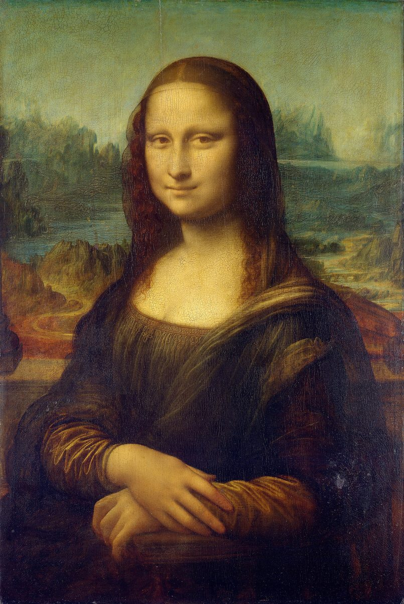

Hidden in the Frame · Louvre Museum, Paris
Mona Lisa
Leonardo da Vinci · c. 1503–1519 · Oil on poplar panel, 77 × 53 cm · Room 711 (Denon wing, level 1)

The story
The woman is Lisa Gherardini, the wife of a Florentine silk merchant. Leonardo began the portrait around 1503 – and never delivered it. He kept painting for years and took it with him to France, where after his death it passed to King Francis I. It only became world-famous in 1911: a handyman at the Louvre stole it, and for more than two years the wall stayed empty. It turned up in Florence – and was briefly shown at the Uffizi before returning to Paris.
Details to look for
- The smile is hard to pin down. Leonardo lets the corners of the mouth melt into soft shadow – sfumato, “like smoke”. Look into her eyes and she smiles. Look straight at her mouth and the smile fades.
- She has no eyebrows or eyelashes. High-resolution scans in 2007 are said to have shown faint traces of them – they probably faded over the centuries or were lost in cleanings.
- Compare the landscape on the left and right: the horizon on the left sits lower than on the right – the two halves don't match. On the right a road winds away, and above her shoulder there is a small bridge.
- Her hands rest calmly one over the other on the armrest. At the edges you can make out the bases of two columns: she is sitting on a loggia, high above the landscape.
What it says
Not a queen but a merchant's wife – painted more alive than anyone before. Yet the theft made her famous too: it was the empty wall that turned her into an icon.
Open the full guide – zoom, audio guide, German & Japanese →